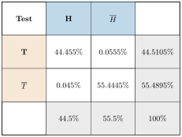

Aufgabe 5.1
Fällt der 1. HIV-Test in Beispiel 5.2.3 positiv aus, wird ein 2. Test (Bestätigungstest) nach einer anderen Methode durchgeführt. Der Test besitzt die gleiche Sensitivität wie der 1. Test, nämlich $P_H(T) = 99.9\%$, aber eine verbesserte Falsch-positiv-Rate von $0.1\%$. Ausserdem wird der 2. Test nur in der Personengruppe durchgeführt, deren Suchtest positiv ausfiel. Hier ist $P(H)$, wie wir im Beispiel sahen, bereits auf $44.5\%$ angewachsen. Welche Aussagekraft hat nun ein positives Resultat im 2. Test?
- Die neue Grundgesamtheit sind nur die positiv Getesteten des 1. Tests
- Erstellen Sie eine neue Vierfeldertafel mit $P(H) = 44.5\%$
- Verwenden Sie die Formel für bedingte Wahrscheinlichkeiten
- Beachten Sie die verbesserte Falsch-positiv-Rate
Gegeben:
- $P(H) = 44.5\%$ (Prävalenz in der vorselektierten Gruppe)
- $P_H(T) = 99.9\%$ (Sensitivität)
- $P_{\overline{H}}(T) = 0.1\%$ (Falsch-positiv-Rate)
Gesucht: $P_T(H)$ (Wahrscheinlichkeit für HIV bei positivem 2. Test)
Berechnung der gemeinsamen Wahrscheinlichkeiten:
Aus $P_H(T) = \frac{P(H \cap T)}{P(H)}$ folgt: $$P(H \cap T) = P_H(T) \cdot P(H) = 0.999 \cdot 0.445 = 0.44455$$
Analog: $$P(\overline{H} \cap T) = P_{\overline{H}}(T) \cdot P(\overline{H}) = 0.001 \cdot 0.555 = 0.000555$$
Vierfeldertafel:

Berechnung der Aussagekraft:
$$P_T(H) = \frac{P(T \cap H)}{P(T)} = \frac{44.455\%}{44.5105\%} \approx 99.88\%$$
Die Aussagekraft steigt dramatisch von ca. 44.5% (nach dem 1. Test) auf 99.9% (nach dem 2. Test).
Im Video: Zusatz · HIV-Test bei 9:20